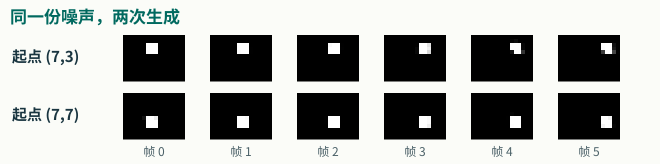

从雪花到运动
用一段六帧方块影片学视频扩散、流匹配与空间控制。可以先看图、跟算一格，再用本机浏览器自己生成。
同一份噪声，方块能换个起点吗？

横着看一排，方块怎样运动？上下比较，什么变了？跟着这段影片出一道去噪题、算一次速度更新，再亲手挪动首帧提示点。
同一份噪声，四段影片 给扩散和流匹配各接一条位置支路，然后只改首帧行号。对应 PDF 第 87 页。
按问题找图、公式与代码 · 用自己的 Python 画出四张图 · 先在浏览器试一道去噪题
按符号找公式，从 ε、σ、v 或 λ 跳到书中的例题。
按问题找实验
增强文字引导，等于增强深度控制吗？ 在同一组橙球短片上只换一个参数，查看采样器实际收到的数（第 15 页）。
只改一张深度图，下一帧的球会换颜色吗？ 播放作者版 ControlVideo 生成的五帧短片，核对颜色和解码器实际读到的修正（第 85–86 页）。
给像素和雪花各分一份方差，要分别乘多少？ 用四张题卡算出方差 1，再固定一格车身，看看为什么变成 0.36（第 7 页）。
连续加两次雪花，可以一步算完吗？ 沿一格车身算一次，再筛选 4,096 对读数（第 7、81–82 页）。
只问四次速度，方块还能走对吗？ 在同一份噪声上生成三排对照，再看224 段影片的成对成绩。
只算 6 步，影片会变短吗？ 比较 6 步和 24 步的成片，再把同一卷影片放快一倍（第 6 页）。也可以逐帧查看 24 次更新的原始录像。
公式里的数字从哪里来？ 用一个像素的三种答案算一次，再看同一格雪花的两种来历，用出题记录检验最好的猜测。还可以把同一格交给两种采样器，看下一层的亮度。
雪花怎样变成连续六帧？ 先看小车为什么会跳，再回放真实像素网络。
末组的一个数加 1，中间两帧能收到多少？ 从方块原片选出收发两块，核对一次真实注意力加权（第 13、48 页）。
只换输入帧 0，帧 3 会知道吗？ 沿三处跨帧连接追踪一个数，再用六乘六的格子表对答案。
方块往右，模型给的速度怎么会是负的？ 倒放一次，再重新生成向左片，比较速度、中心和像素。也可沿两只钟看同一屏幕坐标。
训练标签各指各的方向，模型该听谁的？ 翻训练题、猜速度、数过门人数。
第一次接开源调度器，该怎样对答案？ 拿一个像素和一格潜码，核对库返回的数字（第 79–80 页）。
扩散的 v 能当成直线速度吗？ 把一格像素换算两次，再比较四排实际生成的影片（第 75–77 页）。
流匹配怎样给噪声指路？ 先在路口拖动位置，再看速度怎样作用到视频潜码。
提示放在前半程或后半程，方块会走到哪里？ 生成四排控制时段对照，再逐帧查 224 题的早晚成绩（第 83–84 页）。
一个点为什么会改变邻帧？ 亲手挪点，打开网络里的加号。
一张点图和一个方向标签，各怎样控制视频？ 固定同一份噪声，先挪首帧点，再交换左右。
读真实项目，第一行看什么？ 拆开 HunyuanVideo 的尺寸与时间表，让一个调度器步骤走给你看。
先看图，再动一个旋钮
让一辆车被雪花淹没，让一团点分成两队，再比较逐帧生成与整段生成。可在第一课的四个小实验逐题预测、揭晓和跟算。
训练一张速度表，做一个公平对照
比较收过多少道练习题的模型，观察错一帧的遮罩，或者固定一份雪花把两种采样器各重跑 96 次。只用标准库便能重算。
看一台神经网络自己把像素画出来
从八个固定起点里任选一个，比较训练前与训练后、逐帧与跨帧。看完样片，再用全部 96 段的分数检查直觉。附小模型权重。
只画两个点，能指挥方块拐向另一边吗？
给同一台视频网络一个起点、两个端点或整条路线，播放成对的结果。也可以重放前两步训练，看点图从哪一次更新开始起作用（第 73–74 页）。
谁给噪声指路？一步能不能学会？
站在路口读三个速度箭头，跟随一个点走完全程，再把老师的终点打乱，看看一步学生学到了什么。
亲手改一个潜变量，看哪两帧改变
六帧压成 72 个数。选一格、拖动数值，让真实训练过的解码器在浏览器里重画，再比较直接抽噪声与经过流匹配的影片。
固定雪花，交换“向左”和“向右”
逐头展开 18 个视频块的注意力，手算一步 CFG，再比较全段是否服从方向指令。
从一个点出发，生成六帧向右移动的方块
关掉位置支路，再打开它。逐格看相同噪声生成的两段片，沿着一个隐藏特征追到下一步速度，最后检查 224 段留出影片。
从一张深度图追到五帧彩色影片
只在帧 2 挪球，播放打开和关闭控制的两组成片。点同一格，量 RGB 差异，再核对首次预测里的一次特征加法。
我想在终端里复现，最少需要什么？
进入 reproduce 目录。基础实验：python3 reproduce.py；进阶工坊：python3 workshop.py。它们都只用标准库。
可选的神经网络实验需 PyTorch；安装后运行 python pixel_lab.py --device cpu --replay ../pixel-lab/weights.pt，即可从已有权重重新生成，无需下载外部模型。详细说明见同目录的 README.md。